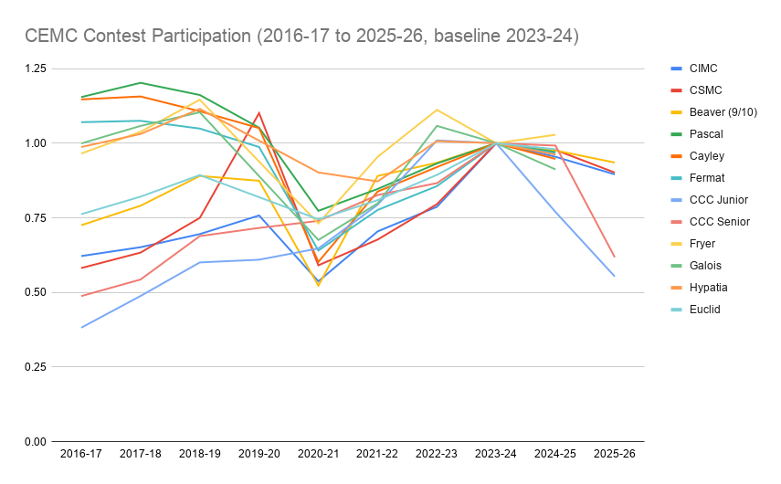
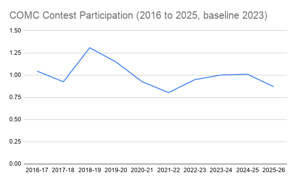

Math Contests in Decline?
Programming competitions might be faring worse
Posted: 03/25/2026
I recently did some data-crunching with participation numbers published by the Centre for Education in Mathematics and Computing (CEMC) for its math and programming competitions. I have had an interest in this since last year, not long before I made my math contests advice page. Additionally, I have been looking into the decline in contest output on the DMOJ competitive programming site since fall of last year particularly after an eight-month gap between rated contests. This page is not about that site specifically, but math and programming competitions more broadly.
The numbers

Following the release of results for the Canadian Computing Competition (CCC), I noticed participation had dropped by over a third in the past two years, with the senior contest's decline occurring almost entirely this year. I was unsure if it were restricted to the CCC, so I decided to look into participation in all high-school CEMC contests and the answer was partly. CCC is clearly an outlier, but all other competitions have had less participants for the most recent available data than they did two or three years ago. Participation in math competitions has only declined by around 5 to 15 percent over the past two years. Given the actual participation numbers, this amounts to thousands of fewer participants in the more popular competitiions, lowering the CEMC's revenue by perhaps $100,000 this year.
Some contests have been declining for a while: The most popular set of contests (Pascal, Cayley, and Fermat) had 10,000 fewer participants in the baseline year 2023-24 than its peak in 2017-18. The Fryer, Galois, and Hypatia competitions also have not returned to their pre-COVID participation. Others reached new peaks in 2023-24: Euclid, considered the most important competition for applications to the University of Waterloo's math faculty, grew post-COVID. So did CIMC and CSMC. The CCC was the only competition to not decline during the pandemic.

The competitions clearly had different trajectories pre-COVID, but post-2024 only a single competition has gained participants between 2023-24 and the most recent available result. That one lost participants in 2023-24. With the high number of participants and lack of major world events which would cause a short-term decline in participation (the war in Iran may cause impacts in the future, but no results released as of March 2026 would have been impacted by it) a decline in interest in the Canadian math competitions is much liklier. The decline is not confined to the CEMC either, the Canadian Open Mathematics Challenge (COMC) run by the Canadian Mathematical Society (CMS) has not reached its 2018 high since, and lost nearly a thousand participants from 2024 to 2025. However, the US seems to be avoiding such a decline. The American Mathematics Competition (AMC) saw stagnant numbers (down ~5%) for its AMC 12 contest (for older students) but growth in its AMC 10 contest (for younger students). Thus, a decline may be confined to Canada.
It is not completely clear why such a decline would occur. However, I can see a few reasons: some temporary, some less so.
Why?
It is difficult to draw any particular conclusion, especially when any given factor may not be known by a large number of parents or students. However, there are a few possibilities.
Cheating? Maybe Not.
Last year, no CCC results were published due to large-scale cheating using generative AI. While this was a great decision to ensure the contest's integrity, it may have hurt future participation since a large number of participants likely knew about the lack of results. Those focused on their results were presumably unhappy that their results were rendered useless due to so many people cheating. This can explain why participation in CCC Senior dropped from 3947 last year (99% of 2024 participation) to 2439 this year.
Other contests have lesser-known cheating problems and it appears they are not affecting participation much. AMC's cheating seems to be the most well-known, with a group trying to fight it. AMC's participation has not noticeably declined like the Canadian competitions so I doubt knowledge of cheating in other competitions is widespread. The mechanism for cheating is also much different: Teachers sell questions and/or answers, often on Chinese social media site Xiaohongshu (小红书, also known in English as RedNote) but elsewhere too (I once got a friend request on Discord from one such account). China is a more lucrative market for this (test scores are viewed as much more important there) but it is certainly not the only market for this. If more parents are made aware of the issue, it could lead to a decline in the future but it certainly is not causing one now outside of CCC.
The Economy?
Economic considerations are top of mind for any parent who wants to guide (or force) their child in a particular direction. From my experience, the average Canadian math competition participant wants to go into the tech industry: Looking to get into a computer science program is most likely, though some prefer math or computer engineering. The tech industry appears to have been saturated since 2023, with job losses making headlines often. It should be noted that not every participant is looking to take this route (many mathematics students do not want to work in the tech industry), but most appear to (even among math students, the most competitive specialization appears to be data science).
Wouldn't CCC be affected more?
The CCC is presumably more tech-focused: The tasks involve algorithms, things which are much more relevant for potential computer science and computer engineering students. Generative AI has been able to do many problems as shown by last year's high rate of AI-assisted cheating. This may make it seem like CCC is becoming a less relevant competition than previously.
Since economic considerations take a long time to show up in participation decisions, we may have to wait a few years. The CCC's recovery or lack thereof will determine whether it was only suffering from a bad couple of years due to the cheating. However, there are a couple of factors which make me reconsider this possibility. For one, CCC Junior participation (meant for beginners but can be taken up to 12th grade) fell nearly 25% last year. While there is no evidence CCC Junior participation is a lagging indicator for Senior, it could suggest less committed students are no longer interested in participating.
Second is the decline of the competitive programming site DMOJ. There are plenty of reasons the site's contest output has declined, but economic consierations may be preventing participants from committing as much to the site as before. This has also affected activity on the site as a whole, though I know other sites like VJudge exist as well. As of now, these examples primarily raise questions which will only be able to answered in the next few years.
University Admissions
In 2022, a friend of mine made the Canadian Computing Olympiad (CCO, reserved for the top ~25 CCC Senior participants) and still got rejected from the University of Waterloo's computer science program, as well as the one at the Univeristy of Toronto St. George campus. There are two additional examples of this I know of which suggest competitions matter less. However, these are likely even more obscure than cheating problems (which with the economy may affect admission decisions in the future).
The Null Hypothesis
The null hypothesis is always possible: This could just be a blip and things will get better next year. I consider this least likely, but it is possible and we will have to wait and see if the current trajectory continues. It is always possible that kids born in 2008 are simply less interested than kids born in 2011 or 2012, though with a large sample this might be unlikely.
Conclusion
Canadian high-school mathematics competitions have experienced a drop in participation over the past two years, and I am not sure why. There are some good reasons to explain it, but the link of any of them has not been proven and they could very well be proven wrong next year. If they continue to decline, people who currently rely on competitions' popularity (such as those running tutoring schools) may want to look into whether it is affecting them and whether they can attract students another way.
If you enjoy participating in such competitions, there is no need for you to stop. In fact, a less crowded field may make it easier to stand out in the long run (though standing out with math competition scores is difficult and I would not recommend trying it). It may also reduce cheating since the market would become less lucrative. The only losers in this are those who actively rely on the contests' popularity.
Last updated: 03/25/2026